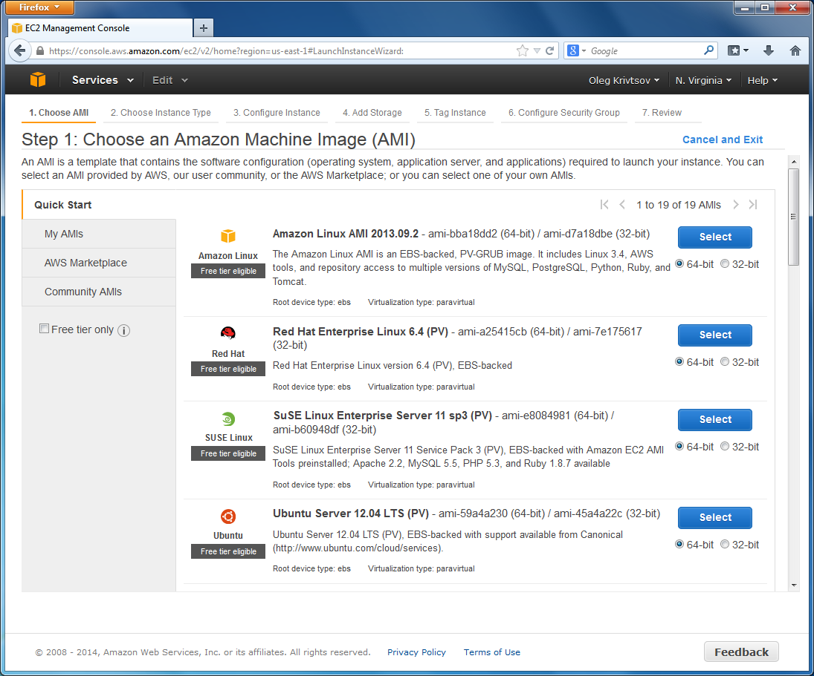
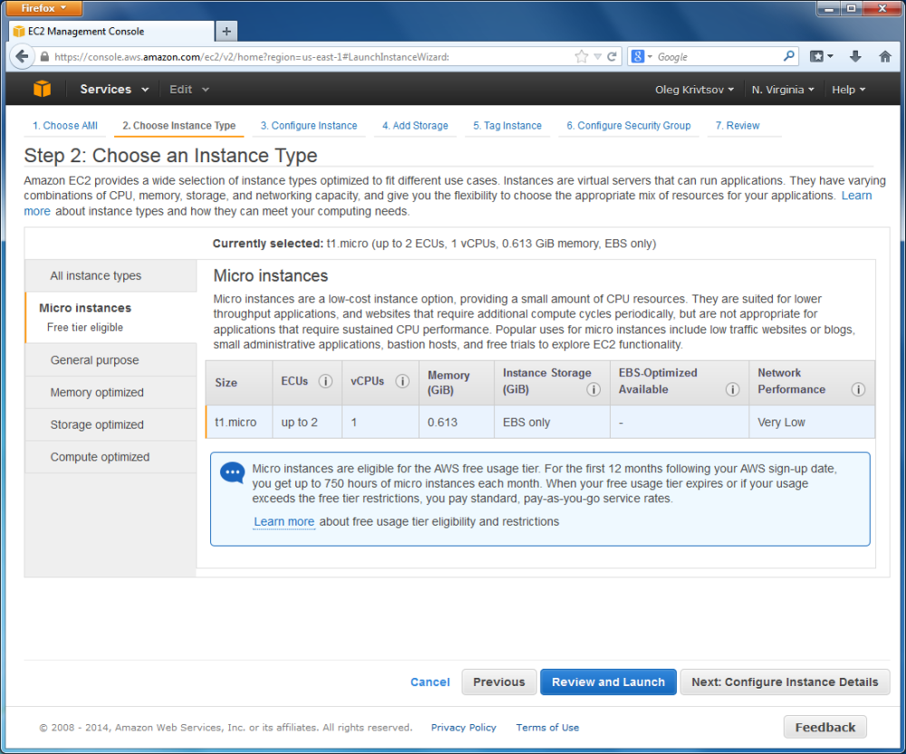
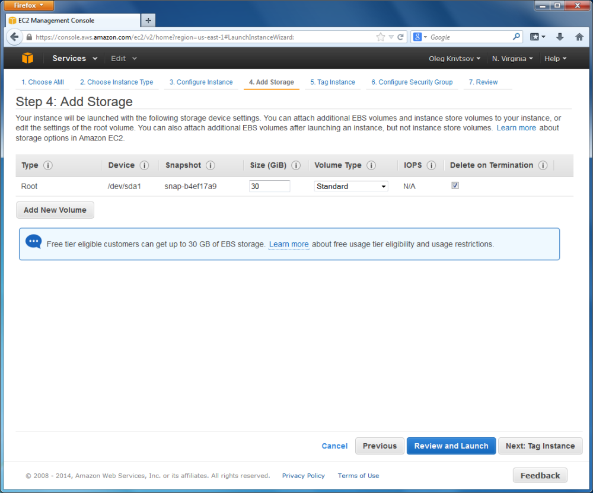
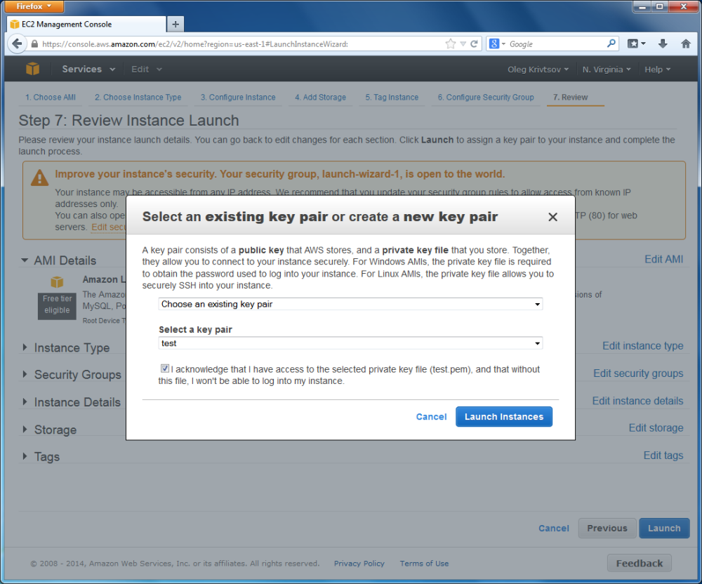
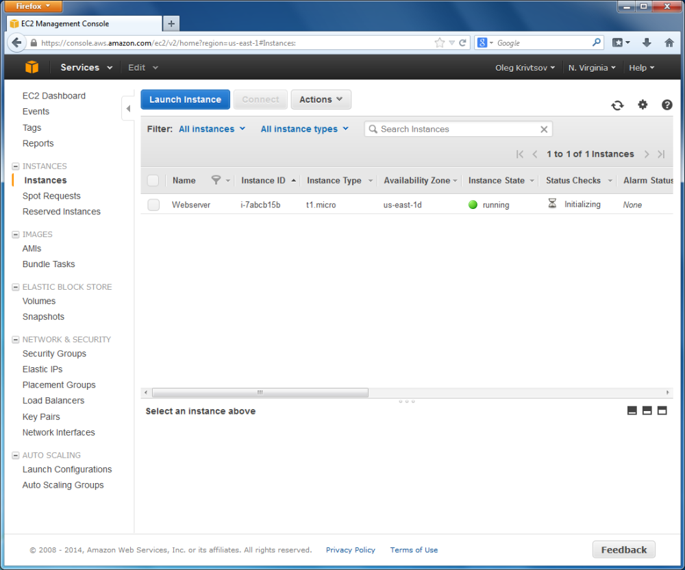

Запуск инстанса EC2
В том же боковом меню выберите пункт Instances в разделе INSTANCES и на появившейся странице нажмите кнопку Launch Instance ("Запустить инстанс"). После этого вам нужно будет пройти несколько страниц мастера настроек.
Шаг 1 – Выберите образ машины Amazon
Первая из этих страниц - Choose an Amazon Machine Image (AMI) ("Выберите образ машины Amazon (AMI)"), показанная на рисунке ниже.
 Рисунок Д.4. Страница Choose an Amazon Machine Image (AMI)
На этой странице вам нужно выбрать дистрибутив Linux, который вы хотите запускать на виртуальной машине. В этом руководстве мы выберем Amazon Linux AMI, 64-bit.
Amazon Linux - это дистрибутив семейства Red Hat Linux и Cent OS. Инструкции по установке у дистрибутивов этого семейства общие. Все они, например, используют менеджер пакетов yum. Так, если вы знаете, как установить программу в Cent OS, вы сможете таким же образом установить ее в Amazon Linux.
В данном руководстве мы будем использовать Amazon Linux, но вы, если хотите, можете выбрать другой дистрибутив.
Нажмите кнопку Select ("Выбрать") в правой части опции Amazon Linux AMI.
Шаг 2 — Выберите тип инстанса
Далее откроется страница Choose an Instance Type ("Выберите тип инстанса"). Она показана на рисунке ниже:
 Рисунок Д.5. Страница Choose an Instance Type
На этой странице можно параметры виртуальной машины, влияющие на ее производительность. В этом руководстве мы будем использовать тип Micro Instance ("Микроинстанс"), доступный для бесплатного пользования. Обратите внимание на то, что данный тип ограничен в мощности процессора и памяти, так что для высоконагруженных систем он не подойдет.
Теперь нажмите кнопку Next ("Далее"), чтобы перейти на следующую страницу.
Шаг 3 - Настройте инстанс
Появится страница Configure Instance ("Настройте инстанс"), представленная на рисунке ниже.
 Рисунок Д.6. Страница Configure Instance
Рисунок Д.6. Страница Configure Instance
На этой странице вы можете изменить детали инстанса. Будет достаточно поставить галочку напротив Enable termination protection ("Включить защиту от завершения"), что защитит виртуальную машину от случайного завершения работы.
Шаг 4 - Добавьте хранилище
Нажав кнопку Next, вы попадете на страницу Add Storage ("Добавьте хранилище"). Она показана на рисунке Д.7.
 Рисунок Д.7. Страница Add Storage
На этой странице вы можете настроить размер виртуального жесткого диска вашего инстанса (уровень бесплатного пользования позволяет выделить 30 ГБ дискового пространства). Этот диск является частью сервиса EBS (Elastic Block Storage - эластичное блоковое хранилище). Он весьма надежен и автоматически создает резервные копии для защиты ваших данных от случайных потерь.
Шаг 5 — Добавьте к инстансу теги
Нажмите кнопку Next, чтобы перейти на страницу Tag Instance ("Добавьте к инстансу теги").
 Рисунок Д.8. Страница Tag Instance
Рисунок Д.8. Страница Tag Instance
Эта страница позволяет добавить один или несколько тегов, чтобы отличить этот инстанс EC2 от других (в будущем у вас на аккаунте может быть несколько инстансов). Например, добавьте тег Name и присвойте ему значение "Webserver". Это поможет вам помнить, что целью этого инстанса является запуск веб-сервера Apache.
Шаг 6 — Группа безопасности
Нажмите кнопку Next и вы перейдете на страницу Security Group ("Группа безопасности"). Эта страница представлена на рисунке Д.9.
 Рисунок Д.9. Страница Security Group
Рисунок Д.9. Страница Security Group
На странице Security Group вам нужно настроить правила группы безопасности (межсетевой экран) для инстанса EC2. Эти правила определяют, какие порты будут открыты для входящего доступа. По умолчанию, инстанс EC2 разрешает доступ через SSH (порт 22). Вам также нужно добавить правило, позволяющее обращаться к порту 80 (HTTP). Для этого нажмите кнопку Add Rule ("Добавить правило") и введите 80 в поле Port Range ("Диапазон порта").
Шаг 7 — Проверьте инстанс перед запуском
Нажав на кнопку Next, вы попадете на последнюю страницу - Review Instance ("Проверьте инстанс перед запуском").
 Рисунок Д.10. Страница Review Instance Launch
Рисунок Д.10. Страница Review Instance Launch
На ней вы можете просмотреть выбранные вами настройки виртуальной машины перед ее запуском. Когда будете готовы, нажмите кнопку Launch ("Запустить"). Появится всплывающее окно Select an existing keypair or create a new keypair ("Выберите существующую ключевую пару либо создайте новую").
 Рисунок Д.11. Страница Select Keypair
Выберите ключевую пару 'test' из списка существующих ключевых пар (мы создали ее ранее в этой главе) и нажмите кнопку Launch Instances ("Запустить инстансы"), чтобы начать процесс запуска инстанса.
Теперь вы можете увидеть ваш инстанс на странице Instances (см. рисунок ниже).
 Рисунок Д.12. Страница Instances